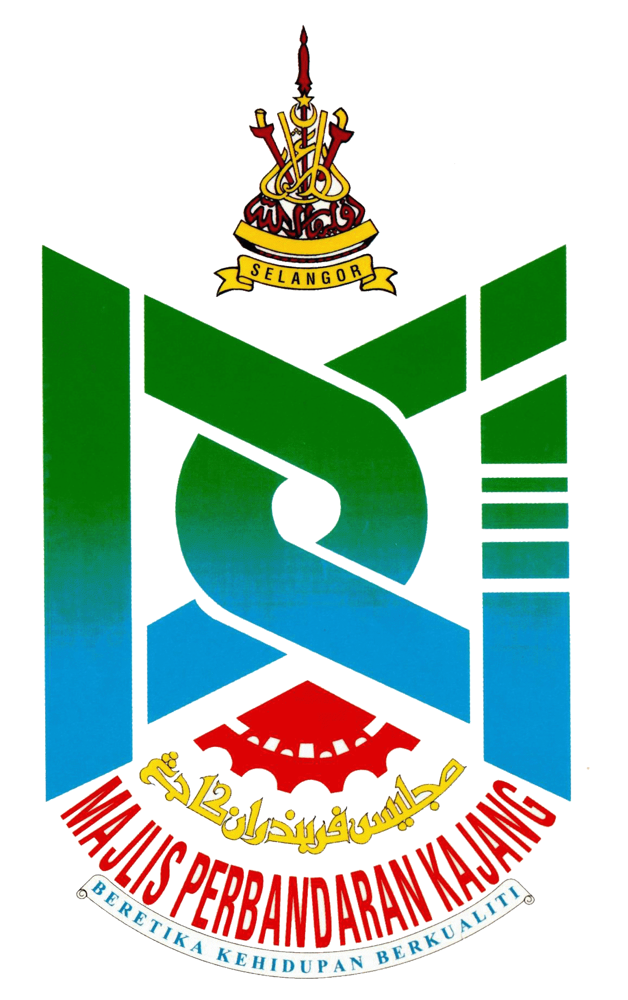

Kad 01
12
Pihak Berkuasa Tempatan (PBT)PENTADBIRAN

Ringkasan indikator pentadbiran dan dokumen rancangan pemajuan Negeri Selangor.
Terokai pentadbiran Negeri Selangor melalui ruang pemetaan digital yang menyatukan maklumat Pihak Berkuasa Tempatan dan daerah pentadbiran.
Terokai lima bab utama perancangan Negeri Selangor melalui navigasi visual interaktif yang merangkumi dasar, hala tuju pembangunan dan dokumentasi spatial negeri.
Menelusuri visi masa hadapan Negeri Selangor melalui perancangan fizikal, pembangunan mampan dan kesejahteraan komuniti.
Pengenalan geospatial Negeri Selangor
Negeri Selangor Darul Ehsan merupakan teras pembangunan fizikal dan ekonomi negara yang berkembang secara dinamik. Sebagai hab perindustrian, perniagaan dan perkhidmatan utama di Malaysia, perancangan fizikal serta tadbir urus wilayah di negeri ini diuruskan secara berstruktur menerusi pembahagian 9 Daerah Pentadbiran dan 12 Pihak Berkuasa Tempatan (PBT) bagi memastikan pembangunan yang mampan, teratur dan berdaya huni.

9 Daerah · 12 Pihak Berkuasa Tempatan · Klik daerah untuk teroka maklumat
Memuatkan peta daerah…
Seluas 8,104 km², merangkumi zon perbandaran, perindustrian, pertanian serta kawasan perlindungan alam sekitar.
Petaling, Gombak, Hulu Langat, Sepang, Klang, Kuala Langat, Kuala Selangor, Hulu Selangor dan Sabak Bernam.
Meliputi 4 Majlis Bandaraya, 7 Majlis Perbandaran dan 1 Majlis Daerah.
4 Majlis Bandaraya: Majlis Bandaraya Shah Alam (MBSA), Majlis Bandaraya Petaling Jaya (MBPJ), Majlis Bandaraya Subang Jaya (MBSJ) dan Majlis Bandaraya Diraja Klang (MBDK).
7 Majlis Perbandaran: Majlis Perbandaran Ampang Jaya (MPAJ), Majlis Perbandaran Kajang (MPKj), Majlis Perbandaran Selayang (MPS), Majlis Perbandaran Sepang (MPSp), Majlis Perbandaran Kuala Langat (MPKL), Majlis Perbandaran Kuala Selangor (MPKS) dan Majlis Perbandaran Hulu Selangor (MPHS).
1 Majlis Daerah: Majlis Daerah Sabak Bernam (MDSB).
Pengurusan guna tanah di Negeri Selangor dipandu oleh hierarki perancangan fizikal yang berintegrasi:
Menetapkan dasar strategik perbandaran dan makro guna tanah negeri.
Memperincikan pengezonan guna tanah, intensiti pembangunan, serta penyediaan prasarana pada peringkat daerah/PBT.
Panduan tindakan khas, pemeliharaan warisan dan pembangunan semula kawasan khusus yang memerlukan perhatian terperinci.
Pelaksanaan integrasi perancangan ini bertujuan mengawal guna tanah secara berhemah, memelihara Kawasan Sensitif Alam Sekitar (KSAS) serta memacu kemampanan bandar selaras dengan aspirasi Rancangan Selangor Pertama (RS-1) dan Rancangan Fizikal Negara (RFN).
Memahami hala tuju, kerangka perundangan dan hierarki rancangan pemajuan yang membentuk pembangunan spatial Negeri Selangor.
Hubungan dasar serta sistem rancangan pemajuan
Akta 172 sebagai panduan utama perancangan bandar, desa dan pembangunan spatial Negeri Selangor.
Perancangan bandar dan desa di Negeri Selangor dilaksanakan berpandukan Akta Perancangan Bandar dan Desa 1976 (Akta 172), yang menyediakan kerangka perundangan sistematik bagi merancang serta mengawal selia guna tanah dan bangunan demi kepentingan awam, kesejahteraan masyarakat, dan kemampanan alam sekitar.
“Suatu dokumen perancangan spatial gunatanah yang memandu arah dan mengawal pembangunan fizikal sesuatu kawasan bagi sesuatu tempoh perancangan yang dipersetujui.”↶ Klik untuk kembali
Sistem ini beroperasi secara berhierarki bermula daripada peringkat kebangsaan merentasi peringkat negeri hingga ke peringkat tempatan bagi memastikan setiap strategi pemajuan di Negeri Selangor adalah selari dengan dasar makro negara.
Gambaran skematik hubungan peringkat perancangan di bawah kerangka Akta 172.
Rajah ringkas untuk navigasi pembelajaran, bukan reproduksi rajah rasmi.
Daripada dasar fizikal kebangsaan kepada tindakan pembangunan terperinci di peringkat tempatan.
Dasar strategik nasional sebagai asas hala tuju perancangan spatial.
Penyataan bertulis yang merumuskan dasar-dasar strategik bagi menentukan haluan dan aliran am pemajuan fizikal negara. Ia merupakan Advisory Plan yang menterjemahkan dasar perancangan sosio-ekonomi dalam dimensi spatial, selaras dengan Rancangan Malaysia 5 Tahun (EPU) dan diluluskan oleh Majlis Perancang Fizikal Negara (MPFN).
Menterjemahkan dasar perancangan sosio-ekonomi dalam dimensi spatial.
Selaras dengan Rancangan Malaysia 5 Tahun (EPU).
Diluluskan oleh Majlis Perancang Fizikal Negara (MPFN).
Tiga elemen utama yang membentuk hala tuju pembangunan spatial negara secara menyeluruh.
HALAKAN TETIKUS ATAU KLIK UNTUK TEROKAPembangunan yang serba lengkap merangkumi infrastruktur menyeluruh, pemantauan prestasi ekonomi wilayah, penglibatan komuniti dalam pembuatan keputusan, serta penggunaan tenaga bersih yang berinovasi.
Kapasiti sistem untuk menghadapi ketidaktentuan ekonomi, adaptasi perubahan iklim serta bencana alam, dan kebolehan pulih dengan segera (resilience).
Perancangan pembangunan yang mewujudkan kualiti hidup serta suasana harmoni melalui keseimbangan teras fizikal, ekonomi, sosial, dan alam sekitar secara kolektif.
Tekan setiap teras untuk meneroka hala tuju strategik.
Penterjemahan dasar dan cadangan pemajuan di peringkat Negeri Selangor.
Penyataan dasar dan cadangan am pemajuan serta penggunaan tanah di peringkat negeri, merangkumi pertalian guna tanah dengan negeri bersempadanan serta mengambil kira dasar RFN (Diluluskan oleh Jawatankuasa Perancang Negeri / JPN dan Pihak Berkuasa Negeri / PBN).
Hala tuju pembangunan yang menggabungkan daya ekonomi, kemajuan sosioekonomi serta kecekapan spatial dan pentadbiran.
HALAKAN TETIKUS ATAU KLIK UNTUK TEROKAMenekankan peranan Selangor sebagai peneraju utama pertumbuhan ekonomi negara yang berfokuskan sektor pembuatan, perkhidmatan, pembinaan, tenaga kerja, dan pengurusan sumber (disokong oleh insentif seperti Pakej Selangor Prihatin & Pakej Kita Selangor).
Tertumpu ke arah mengekalkan dan menambah baik sosioekonomi serta persekitaran dalam menghadapi isu-isu pembangunan baharu seperti perubahan iklim dan sekuriti makanan.
Diterapkan merangkumi aspek pembangunan spatial, infrastruktur, dan pengurusan pentadbiran bagi memastikan kemajuan sedia ada dapat ditingkatkan dengan berkesan.
Tekan setiap teras untuk membuka senarai hala tuju strategik. Semua teras tertutup pada paparan awal.
Menitikberatkan pertumbuhan KDNK, pelaburan berkualiti dan pembangunan ekonomi digital untuk memperkukuh kedudukan Selangor sebagai negeri berdaya saing.
Mengimbangi pembangunan fizikal dan alam sekitar melalui pengurusan perbandaran, perlindungan KSAS, sekuriti makanan serta adaptasi perubahan iklim.
Memastikan kesejahteraan rakyat melalui akses perumahan berkualiti, kemudahan awam, kesihatan, pengangkutan bersepadu dan pengurusan bekalan air.
Ruang paparan dokumen pelan konsep pembangunan rasmi.

Imej pelan rasmi belum tersedia dalam repositori. Sila masukkan fail pelan yang disahkan untuk dipaparkan di sini.
Nama fail: pelan-konsep-rsn-selangor-2035-pengubahan.pngPelan Konsep Pembangunan RS Negeri Selangor 2035 (Pengubahan) · Paparan imej tertakluk kepada ketersediaan dokumen rasmi.
Hala tuju pembangunan, kawalan guna tanah dan cadangan pemajuan di peringkat tempatan.
Rancangan Tempatan (RT) ialah dokumen perancangan rasmi yang mengandungi rumusan tindakan serta cadangan strategik oleh Pihak Berkuasa Perancangan Tempatan (PBPT) bagi memandu arah pembangunan fizikal dan sosioekonomi setempat.
Dokumen ini berperanan sebagai panduan bagi penyelarasan pembangunan, pengurusan guna tanah, penyediaan kemudahan serta pemeliharaan kualiti persekitaran untuk pembangunan yang terancang, mampan dan berdaya huni.
Peranan Rancangan Tempatan dalam mengawal selia pembangunan secara menyeluruh.
Mengawal selia pembangunan dan corak penggunaan tanah secara optimum.
Melindungi, memperelok alam sekitar fizikal, memelihara rupa bumi semula jadi dan menanam pokok.
Mengadakan rizab tanah lapang serta memelihara dan mengindahkan ciri rupa bangunan.
Memperbaik sistem perhubungan serta mengurus lalu lintas dengan cekap.
Asas perundangan bagi penyediaan, penyelarasan dan pelaksanaan cadangan Rancangan Tempatan.
Rancangan Tempatan mengandungi perkara-perkara dasar yang ditetapkan dan diluluskan oleh Jawatankuasa Perancang Negeri (JPN).
Dilengkapi rajah, gambaran visual dan bahan sokongan bagi menerangkan secara terperinci cadangan perancangan oleh PBPT.
Klik nama PBT untuk memaparkan senarai Rancangan Tempatan yang berkaitan. Semua senarai ditutup pada paparan awal.
 Majlis Bandaraya Shah AlamMBSA
Majlis Bandaraya Shah AlamMBSA.png) Majlis Bandaraya Petaling JayaMBPJ
Majlis Bandaraya Petaling JayaMBPJ
Majlis Perbandaran KajangMPKj Majlis Perbandaran SepangMPSp
Majlis Perbandaran SepangMPSp Majlis Perbandaran Hulu SelangorMPHS
Majlis Perbandaran Hulu SelangorMPHS Majlis Daerah Sabak BernamMDSB
Majlis Daerah Sabak BernamMDSBPilih PBT untuk melihat lokasinya
Penanda menunjukkan lokasi rujukan pejabat PBT, bukan sempadan kawasan pentadbiran PBT.
Nota: Nama, status dan tahun rancangan adalah berdasarkan maklumat rujukan yang dibekalkan. Semakan terhadap rekod pewartaan rasmi disyorkan sebelum penerbitan akhir.
Rancangan Tempatan menterjemahkan dasar perancangan peringkat negeri kepada cadangan pembangunan setempat melalui penyelarasan guna tanah, pemeliharaan alam sekitar, kemudahan awam dan infrastruktur bagi menyokong pembangunan Selangor yang bersepadu, mampan dan memenuhi keperluan masyarakat.
Cadangan tindakan khusus dan terperinci untuk kawasan berkepentingan di Negeri Selangor.
Penyediaan Rancangan Kawasan Khas (RKK) diperuntukkan di bawah Subseksyen 16B(1), (2), dan (3) Akta Perancangan Bandar dan Desa 1976 (Akta 172). Dokumen ini mengandungi cadangan tindakan khusus dan terperinci bagi tujuan memajukan, memajukan semula, memperelok, memulihara, atau menguruskan sesuatu kawasan tertentu.
RKK ialah instrumen perancangan tindakan yang memberi tumpuan kepada pembangunan atau pemuliharaan kawasan tertentu secara lebih terperinci mengikut keperluan, potensi dan isu setempat.
SUBSEKSYEN 16B(1), (2) & (3) · AKTA 172Instrumen perancangan khusus yang membolehkan Pihak Berkuasa Perancangan Tempatan (PBPT) merancang tindakan terperinci.
Melaksanakan pembangunan serta-merta setelah mengenal pasti isu perancangan dan pembangunan setempat.
Meliputi aspek pemajuan, pemajuan semula, pengelokkan dan pemuliharaan kawasan yang mempunyai kepentingan khusus.
Boleh disediakan serentak semasa penyediaan Rancangan Struktur atau Rancangan Tempatan, atau selepas dokumen tersebut berkuat kuasa.
Klik nama PBT untuk melihat senarai dokumen RKK yang berkaitan. Semua senarai ditutup pada paparan awal.
Majlis Bandaraya Petaling JayaMBPJMajlis Perbandaran Hulu SelangorMPHSNota: Nama, tahun dan status RKK adalah berdasarkan maklumat yang dibekalkan. Status pewartaan dan perincian dokumen hendaklah disahkan melalui rekod rasmi.
RKK memperincikan cadangan tindakan di kawasan tertentu yang memerlukan pembangunan, pemajuan semula, pengelokkan, pemuliharaan atau pengurusan khas. Penyediaannya di bawah Akta 172 membantu PBPT menyelaraskan tindakan mengikut keperluan kawasan dan pelaksanaan yang dirancang.
Rujukan rasmi bagi kerangka perundangan perancangan bandar dan desa di Malaysia.
Akta 172 · Naskhah dikemas kini sebagaimana 1 Jun 2021
Sumber rujukan: PLANMalaysia
Meneroka dasar, strategi dan cadangan pembangunan fizikal negeri ke arah Selangor 2035 yang berdaya huni dan mampan.
Kerangka spatial pembangunan negeri
Pilih tajuk lain di atas untuk melihat kandungan perancangan yang berkaitan.
Pilih “Ketahui Lanjut” pada mana-mana kad untuk membaca huraian penuh tanpa meninggalkan halaman.
Menterjemahkan dasar baharu dalam perancangan pembangunan fizikal negeri.
Memenuhi keperluan statutori di bawah Seksyen 8 Akta 172.
Menyediakan asas penyelarasan keputusan kerajaan dan sektor swasta.
Menyediakan rangka kerja bagi penyediaan rancangan tempatan.
Melengkapkan sistem perancangan bandar dan desa negara pada peringkat Rancangan Fizikal Negara (RFN), Rancangan Struktur (RS) dan Rancangan Tempatan (RT).
Membentuk matlamat, dasar dan cadangan pembangunan sosioekonomi dan persekitaran negeri.
Merangkumi perkara tambahan yang ditetapkan oleh JPN dan MPFN dalam pembangunan atau kes tertentu.
Matlamat, Teras Pembangunan, Hala Tuju Strategik serta Konsep dan Strategi Pembangunan Tertumpu Wilayah Bandar dan Separa Bandar RS Negeri Selangor 2035 (Pengubahan)
Klik atau halakan tetikus pada kad untuk menelusuri elemen Produktif, Progresif dan Pintar.
Hala tuju pembangunan yang menggabungkan daya ekonomi, kemajuan sosioekonomi serta kecekapan spatial dan pentadbiran.
HALAKAN TETIKUS ATAU KLIK UNTUK TEROKAMenekankan peranan Selangor sebagai peneraju utama pertumbuhan ekonomi negara yang berfokuskan sektor pembuatan, perkhidmatan, pembinaan, tenaga kerja, dan pengurusan sumber (disokong oleh insentif seperti Pakej Selangor Prihatin & Pakej Kita Selangor).
Tertumpu ke arah mengekalkan dan menambah baik sosioekonomi serta persekitaran dalam menghadapi isu-isu pembangunan baharu seperti perubahan iklim dan sekuriti makanan.
Diterapkan merangkumi aspek pembangunan spatial, infrastruktur, dan pengurusan pentadbiran bagi memastikan kemajuan sedia ada dapat ditingkatkan dengan berkesan.
Tekan setiap teras untuk membuka senarai hala tuju strategik. Semua teras tertutup pada paparan awal.
Menitikberatkan pertumbuhan KDNK, pelaburan berkualiti dan pembangunan ekonomi digital untuk memperkukuh kedudukan Selangor sebagai negeri berdaya saing.
Mengimbangi pembangunan fizikal dan alam sekitar melalui pengurusan perbandaran, perlindungan KSAS, sekuriti makanan serta adaptasi perubahan iklim.
Memastikan kesejahteraan rakyat melalui akses perumahan berkualiti, kemudahan awam, kesihatan, pengangkutan bersepadu dan pengurusan bekalan air.
Pembangunan Tertumpu Wilayah Bandar dan Separuh Bandar (City and Sub City-Focused Oriented Development) menumpukan pertumbuhan fizikal dan ekonomi di kawasan tepu bina, berkepadatan penduduk tinggi dan mempunyai rangkaian pengangkutan yang baik, termasuk konurbasi Shah Alam, Petaling Jaya, Subang Jaya dan Klang.
Kawasan di luar teras seperti Sabak Bernam, Hulu Selangor dan Hulu Langat dipelihara untuk pertanian, pelancongan dan warisan bagi mengimbangi pembangunan dengan kelestarian alam sekitar.
Pelaksanaan berpandukan kawalan dan garis panduan perancangan.
Tumpuan kepada keperluan pemajuan kritikal di kawasan teras utama.
17 hala tuju strategik merangkumi sektor pembangunan utama negeri. Antara inisiatif dan projek impak tinggi:
Wilayah Pembangunan Bersepadu di Selangor Selatan.
Kawasan Pembangunan Sabak Bernam.
Zon Pembangunan Ekonomi Selangor Maritime Gateway.
Selangor Greater Klang Valley.
Konsep Pembangunan Tertumpu Wilayah Bandar dan Separa Bandar adalah secara indikatif, manakala perancangan terperinci lot based tertakluk kepada Rancangan Tempatan mengikut subseksyen 18(1) Akta 172.
TERTAKLUK PBN & PBPT ZON 01
ZON 01Mengenalpasti zon galakan pembangunan perbandaran.
LOKASI & LIPUTANKawasan Tumpuan: Bertumpu di Daerah Petaling, Klang, Gombak, Hulu Langat, Sepang, dan Kuala Langat yang dikenali sebagai Konurbasi Nasional. Pusat Pertumbuhan Utama: Shah Alam, Petaling Jaya, Klang, Subang Jaya, Damansara, Bandar Baru Bangi, Kajang, Telok Panglima Garang, Banting-Telok Datok-Bandar Mahkota, Kuala Selangor, Puncak Alam, Ijok, Bistari Jaya, Tanjung Karang, Sekinchan, Sungai Besar, Sabak, Bernam Jaya, Kuala Kubu Bharu, Batang Kali, Bukit Beruntung, dan Serendah.
Pilih tajuk lain di atas untuk melihat kandungan perancangan yang berkaitan.
Matlamat Utama: Selangor Negeri Produktif, Progresif dan Pintar.
Memacu pertumbuhan ekonomi berprestasi tinggi berasaskan teknologi, inovasi dan digitalisasi.
Memastikan pembangunan fizikal mampan, berdaya tahan bencana dan berteraskan pemeliharaan alam sekitar.
Meningkatkan kesejahteraan komuniti melalui penyediaan perumahan, kemudahan awam dan pengangkutan cekap.
Perincian ketiga-tiga teras diteruskan dalam seksyen Teras Pembangunan sedia ada di bawah.
Pilih tajuk lain di atas untuk melihat kandungan perancangan yang berkaitan.
Bab ini mengemukakan dasar-dasar RS Negeri Selangor 2035 (Pengubahan) yang dibentangkan mengikut teras pembangunan dan dalam konteks rentas sektor. Penyataan dasar dibentangkan bersama dengan inisiatif pelaksanaan dan agensi pelaksana utama yang akan menjadi garis panduan bagi pelaksanaan dasar tersebut. Dasar-dasar ini disokong oleh pelan subjek yang berkaitan.


Pelan Strategik Guna Tanah RS Negeri Selangor 2035 (Pengubahan) merupakan pelan indikatif yang menggariskan cadangan pemajuan dan penggunaan tanah Negeri Selangor sehingga tahun 2035.
HALA TUJU PEMBANGUNAN SPATIAL · 2035 ATLAS DIGITAL · GUNA TANAH
Terokai lapisan pembangunan · Klik imej untuk lihat penuh
ATLAS DIGITAL · GUNA TANAH
Terokai lapisan pembangunan · Klik imej untuk lihat penuh
Pelan ini membentuk kerangka spatial negeri bagi menyelaraskan guna tanah, keperluan pembangunan fizikal dan hala tuju pertumbuhan. Ia menjadi rujukan strategik bagi perancangan yang lebih teratur pada peringkat negeri dan tempatan.
03 Fungsi Utama Pelan
Memberikan panduan kepada penyediaan RT, Rancangan Kawasan Khas (RKK) dan kajian perancangan berkaitan.
Menentukan hala tuju pemajuan strategik bagi menyokong pelaburan dan pertumbuhan ekonomi negeri.
Menjadi rujukan pengawalan perancangan untuk memastikan pemajuan lebih tersusun dan selaras dengan dasar.
Teknik tapisan (sieving method) digunakan untuk mengenal pasti kawasan yang berpotensi untuk dimajukan berbanding kawasan yang mempunyai kekangan atau halangan pembangunan. Analisis mengambil kira kawasan tepu bina, Kawasan Sensitif Alam Sekitar (KSAS), kawasan pertanian produktif serta infrastruktur dan utiliti.
Ringkasan Keluasan Mengikut Kategori
Nota: Keluasan dipetik daripada maklumat pelan yang dibekalkan. Kategori spatial mungkin bertindih dan tidak wajar dijumlahkan sebagai satu keluasan keseluruhan.
04 Lapisan Tapisan Spatial
Meliputi kawasan perbandaran dan pembangunan komited, khususnya kawasan yang telah mengalami pembangunan fizikal yang tertumpu.
Taburan utama: Konurbasi Nasional meliputi Daerah Petaling, sebahagian besar Klang, Hulu Langat, Sepang dan Gombak.
Taburan juga merangkumi pusat-pusat petempatan di Kuala Langat, Hulu Selangor, Kuala Selangor dan Sabak Bernam.
Sepuluh kategori atau lapisan KSAS diambil kira bagi mengawal tekanan pembangunan terhadap sumber alam, kawasan warisan dan kawasan berisiko.
Memelihara sumber pengeluaran makanan dan menyokong keterjaminan makanan negeri, dengan keutamaan kepada Zon Kawasan Pertanian Utama (KPU) dan jelapang padi.
Pengambilan kira rangkaian pengangkutan serta kawasan kemudahan dan utiliti utama dalam penentuan kesesuaian pembangunan.
Pembentukan pelan ini menggabungkan strategi pembangunan wilayah, asas-asas strategik serta dasar dan inisiatif pelaksanaan. Ketiga-tiga komponen tersebut membantu menyelaraskan matlamat pembangunan negeri dengan kekangan spatial dan fungsi pusat pertumbuhan.
03 Komponen Pembentukan Pelan
Pemajuan berfokus mengikut konteks wilayah bandar dan separa bandar.
Kerangka spatial utama yang membimbing pemilihan dan pengurusan kawasan pembangunan.
Dasar dan tindakan pelaksanaan bagi menterjemah hala tuju perancangan di lapangan.
Rujukan visual pelan indikatif guna tanah Negeri Selangor sehingga tahun 2035, termasuk petunjuk dan lapisan perancangan berkaitan.

Dokumen rujukan perancangan spatial dan dasar pemajuan Negeri Selangor.
Dokumen Rancangan Struktur Negeri Selangor 2035 (Pengubahan) untuk rujukan perancangan pembangunan negeri.
Sumber rujukan: PLANMalaysia Selangor ↗
Fail PDF berada di pelayan PLANMalaysia Selangor. Untuk menyimpan fail, buka PDF dan pilih butang muat turun dalam pelayar.
Meneliti perancangan di peringkat tempatan dan kawasan khas bagi menyokong pembangunan yang tersusun mengikut keperluan setempat.
RT dan RKK dalam pentadbiran setempat
Dua instrumen perancangan yang saling melengkapi: RT memperincikan pembangunan tempatan, manakala RKK memberikan tindakan khusus bagi kawasan terpilih.
Pilih nama PBT untuk meneroka ringkasan dokumen Rancangan Tempatan.
Pratonton ialah paparan langsung laman Esri jika perkongsian awam dan embed dibenarkan. Gunakan Terokai Portal untuk melihat StoryMap penuh. Tajuk dokumen diambil daripada senarai RT yang telah tersedia dalam portal ini.
Pilih PBT untuk melihat lokasinya
Penanda menunjukkan lokasi rujukan pejabat PBT, bukan sempadan kawasan pentadbiran PBT.
Dokumen rasmi yang menterjemahkan dasar dan cadangan umum Rancangan Struktur (RS) kepada bentuk fizikal yang lebih terperinci dan praktikal.
Menunjukkan tata atur pembangunan kawasan serta dilengkapi pernyataan bertulis, peta cadangan guna tanah dan gambaran asas perancangan.
Merangkumi rumusan perincian khas di bawah Subseksyen 12(3), Akta 172.
Menterjemahkan polisi dan strategi RS ke skala pemajuan tempatan.
Rujukan utama pembangunan fizikal daerah/PBT melalui peta cadangan guna tanah.
Menyediakan garis panduan serta kawalan perancangan bagi kelulusan Kebenaran Merancang (KM).
Mengenal pasti projek utama daerah serta garis panduan pelaksanaannya.
Pilih PBT untuk meneroka pengenalan dokumen RKK dan pratonton StoryMap Esri.
Pratonton ialah paparan langsung laman Esri jika perkongsian awam dan embed dibenarkan. Gunakan Terokai Portal untuk melihat StoryMap penuh. Panel ini hanya memaparkan PBT dengan pautan StoryMap Esri. Tajuk dokumen adalah daripada direktori RKK asal.
Rancangan tindakan khusus (Action Plan Area) untuk sesuatu kawasan yang dikenal pasti oleh Pihak Berkuasa Negeri (PBN) / Pihak Berkuasa Perancang Tempatan (PBPT).
Meliputi tindakan memajukan segera, memajukan semula, memperelokkan, memelihara atau menguruskan sesuatu kawasan.
RKK mempunyai kekuatan kuasa undang-undang seperti mana Rancangan Tempatan, berdasarkan maklumat perundangan yang dibekalkan.
Panduan terperinci dalam kawalan dan perancangan bagi kawasan yang telah dikhaskan.
Alat pembangunan yang teratur mengikut prosedur yang telah ditetapkan.
PANDUAN INTERAKTIF · RKK
Majlis Bandaraya Petaling JayaMBPJMajlis Perbandaran Hulu SelangorMPHSPilih PBT untuk melihat lokasinya
Penanda menunjukkan lokasi rujukan pejabat PBT, bukan sempadan kawasan pentadbiran PBT.
Nama dan status RKK dipetik daripada senarai Bab 02 dan memerlukan semakan pewartaan rasmi. Peta menunjukkan lokasi pejabat PBT, bukan sempadan pentadbiran atau sempadan RKK.
Nota: Maklumat dan senarai PBT berdasarkan bahan yang dibekalkan bagi Story Map ini.
Terus ke Direktori Pihak Berkuasa Tempatan Selangor untuk mendapatkan portal rasmi dan maklumat setempat.
Kenali 12 Pihak Berkuasa Tempatan di Negeri Selangor dan akses portal rasmi bagi mendapatkan maklumat perancangan, perkhidmatan serta urusan setempat.
MBSAMBSAMajlis Bandaraya Shah Alam↗
MBPJMBPJMajlis Bandaraya Petaling Jaya↗
MBSJMajlis Bandaraya Subang Jaya↗
 MBDKMBDKMajlis Bandaraya Diraja Klang↗
MPAJMajlis Perbandaran Ampang Jaya↗
MBDKMBDKMajlis Bandaraya Diraja Klang↗
MPAJMajlis Perbandaran Ampang Jaya↗
 MPSMPSMajlis Perbandaran Selayang↗
MPKjMajlis Perbandaran Kajang↗
MPSMPSMajlis Perbandaran Selayang↗
MPKjMajlis Perbandaran Kajang↗
 MPSpMPSpMajlis Perbandaran Sepang↗
MPSpMPSpMajlis Perbandaran Sepang↗
 MPKLMPKLMajlis Perbandaran Kuala Langat↗
MPKLMPKLMajlis Perbandaran Kuala Langat↗
 MPKSMPKSMajlis Perbandaran Kuala Selangor↗
MPKSMPKSMajlis Perbandaran Kuala Selangor↗
 MPHSMPHSMajlis Perbandaran Hulu Selangor↗
MPHSMPHSMajlis Perbandaran Hulu Selangor↗
 MDSBMDSBMajlis Daerah Sabak Bernam↗
MDSBMDSBMajlis Daerah Sabak Bernam↗
Rujuk dua dokumen utama perancangan negeri: Akta Perancangan Bandar dan Desa 1976 (Akta 172) serta Rancangan Struktur Negeri Selangor 2035 (Pengubahan). Gunakan carian pantas di header, bersebelahan pilihan bahasa, untuk mencari kandungan portal.
Naskhah dikemas kini sebagaimana 1 Jun 2021
Negeri Selangor · Dokumen rasmi PLANMalaysia Selangor